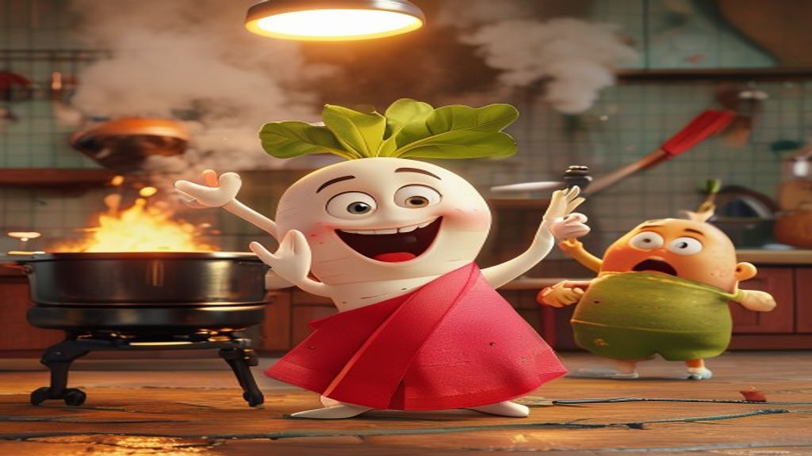
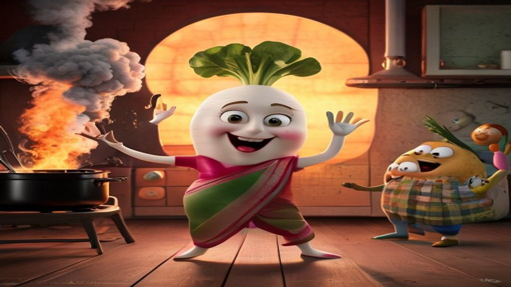
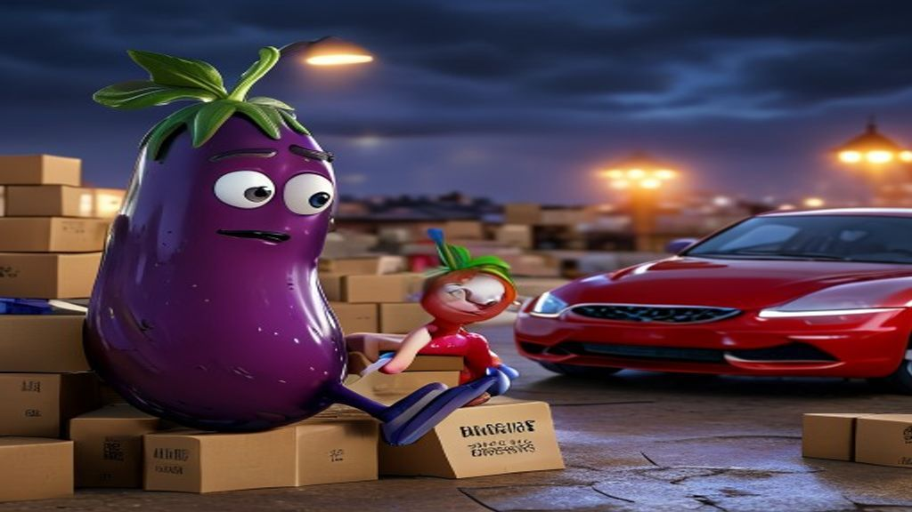
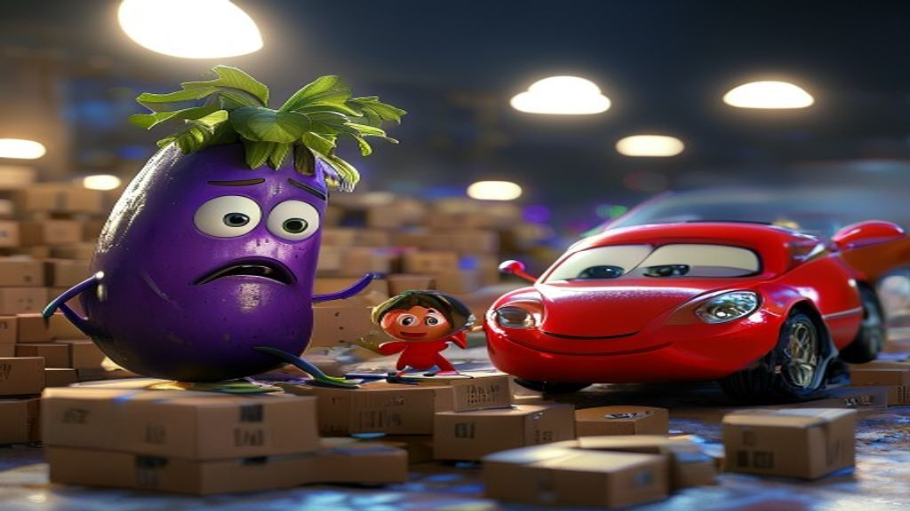

← Veg-Toon Studio / Thumbnail Previews
🖼️ AI-rendered previews · Story 9 & 10Actual AI renders of the new story-scene thumbnails, so you can see the style. Each is shown clean (left) and with the Hindi title overlay (right) so you can picture the finished thumbnail. Please read the note at the bottom before judging quality.
The scene tells the whole story at a glance: Mummy dancing for a reel while the kitchen burns behind her. That's the curiosity hook — "why is she ignoring the fire?!"

Clean render recommended — all characters are vegetables, chaos reads instantly.
With the Hindi title overlay (added in Canva, not by AI) + logo badge — the finished look.

Alternate seed — softer, more storybook.
The whole conflict in one frame: the crushed eggplant dad buried in delivery boxes, his little one holding a paper he can't pay for, and the show-off's shiny car gleaming behind. Instant "what happened to him?"

Clean render recommended — dad + little tomato + boxes + car, all vegetables, no human drift.
With the Hindi title overlay + logo badge — the finished look.

Alternate seed — dad is more expressive; car reads a touch cartoonish.
Full text-free prompts to render at production quality are in each story's Thumbnail Pack: Story 9 pack · Story 10 pack. The style rules are in the Thumbnail Playbook 2.0.